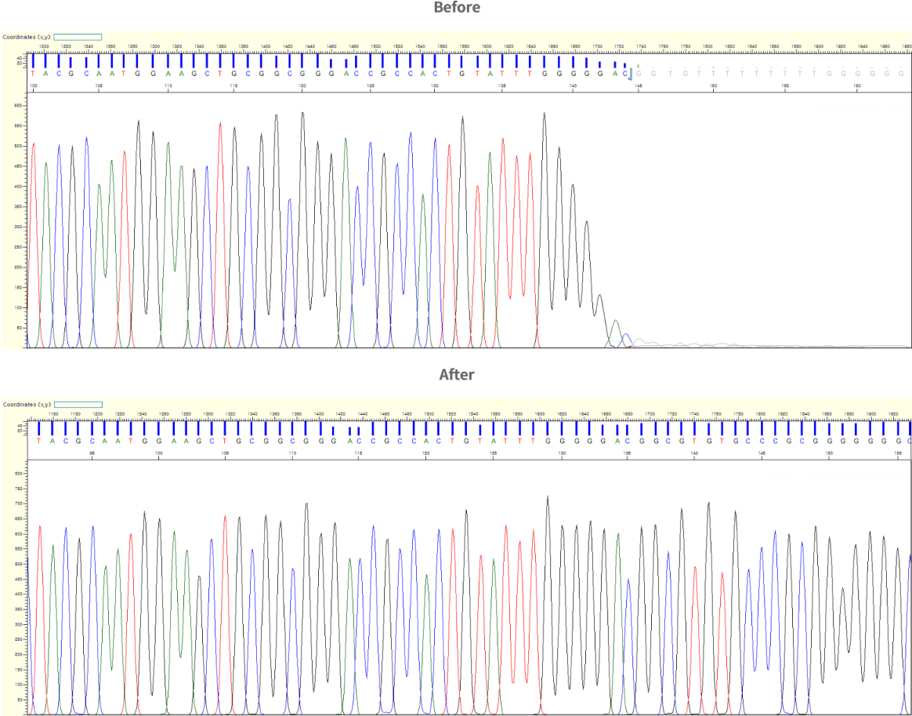
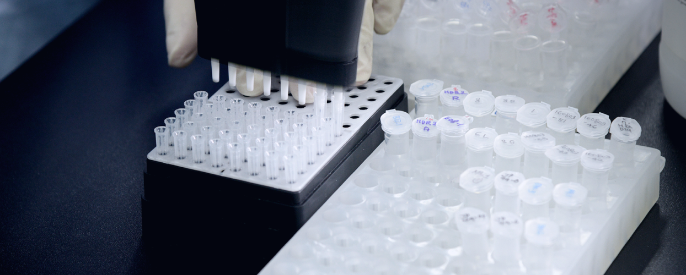
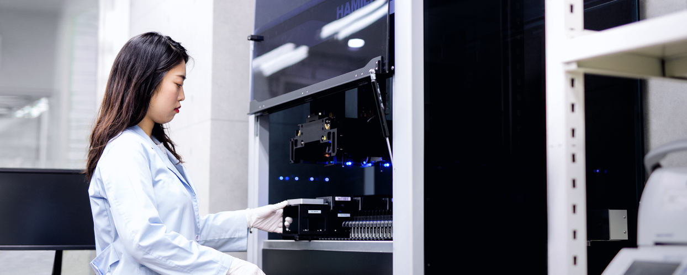
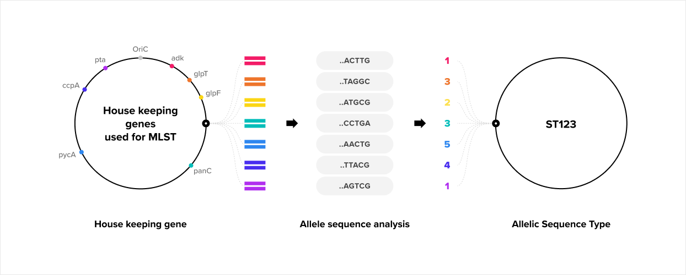
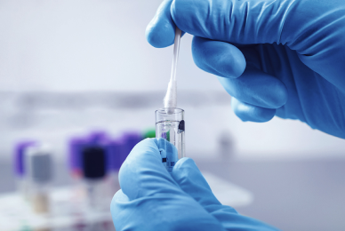

혈연 관계를 확인하기 위해 성염색체를 포함한 총 16개의 STR (Short Tandem Repeat) 유전자를 유전자 증폭을 통해 검사합니다. STR (Short Tandem Repeat)은 인간의 DNA 염기서열 중 2~7개의 염기가 연속적으로 반복되는 구간을 의미합니다. ATG 염기서열 반복 횟수를 확인해 친자 확인 여부를 증명할 수 있습니다. 16개의 STR 유전자 좌위를 조사하여 부, 모, 자녀 3인의 친자 검사확률이 99.999% 이상, 부(모), 자 2인의 검사확률이 99.9% 이상이면 친부(모)로 인정합니다.
@@include('../../html/include/component/header.html')
@@include('../../html/include/common/breadcrumb-white-depth3.html',{
"depth1": "Business",
"depth2": "연구서비스",
"depth3": "CES",
})
CES
Capillary Electrophoresis Sequencing
SERVICE
@@include('../../html/include/component/busniess/subject-box_ces.html')


SERVICE
Standard Sequencing
Standard Sequencing은 고객이 의뢰한 PCR product와 Plasmid DNA 등을 Sequencing하는 서비스입니다.
CES 자동화 시스템과 풍부한 경험을 바탕으로 빠르고 정확한 서비스를 제공합니다. 결과 발송 후에는 전문관리자가 사후관리를 도와드립니다.
Features
- ABI 3730xl System
- High quality results 및 Normal read length (1,050bp)
- LIMS (Laboratory Information Management System)를 기반으로 주문접수부터 결과발송까지 실시간 모니터링 가능
- 샘플접수 후 24시간 내 결과제공(오후 6시이전 접수에 한함)
- 기본적인 분석서비스 무료제공(BlastN 또는 BlastX를 통한 단백질과 DNA염기서열 수주에서 상동성 검색)
- Universal primer 무료제공
Standard Sequencing Single/Plate
Standard Sequencing은 Single tube와 96well plate 두 가지로 실험 진행이 가능합니다.
Sequencing Platform
- 샘플을 Individual tube에 준비하여 의뢰하는 서비스
- 무료 재반응 서비스 제공
Additional Service
- PCR product 정제 (Single/Plate 모두가능)
- Gel extraction
- Clones 채취 &Plasmid 추출 (Single/Plate/Agar plate 모두가능)
- BAC/Fosmid/Cosmid 추출
- Gel running을 통한 농도확인
Difficult Template Sequencing
Standard Sequencing 결과확인 후 또는 고객의 정보를 바탕으로 특이 구조를 보유한 Template를 Sequencing하는 서비스입니다. 특히 아래와 같은 특이구조를 가진 Template에 적합하며 고품질의
개선된 결과를 안정적으로 얻을 수 있습니다.
- Hairpin 구조의 siRNA
- 특이한 2차 구조
- G-rich
- Homopolymeric tracts(PolyG)
- GT-Repetitive regions

Identification
범용적으로 사용되는 미생물/생물체의 종을 판별하는 실험을 prep부터 분석까지 패키지로 제공하는 서비스입니다.

16S/18S/26S rRNA&ITS Region Full Sequencing
16S rRNA gene 27F, 1492R primer를 이용하여 PCR을 진행한 뒤 Inter-primer인 785F, 907R primer로 Sequencing 하여 균을 동정하는 서비스입니다. 고객이 원하는 경우 Primer를 추가 선택/변경하여 약 1,350bp 이상의 염기서열을 제공합니다.
Bacteria+
Bacteria의 경우 16S rRNA gene을 27F, 1492R primer를 이용하여 PCR을 진행한 뒤 Inter-primer인
785F, 907R primer로 Sequencing하여 균을 동정하는 서비스 입니다.
고객이 원하는 경우 Primer를 추가로 선택/변경하여 약 1,350bp 이상의 염기서열을 제공해 드립니다.
Fungi
18S rRNA region의 염기서열 분석을 통해 1,600bp 이상, ITS region의 염기서열 분석을 통해 500bp 이상, 26S rRNA gene(D1/D2/D3 region)의 염기서열 분석을 통해 1,300bp 이상의 결과를 보장합니다.
Rapid-ID
MALDI-TOF 단백질 분석 기술을 이용한 미생물질량분석동정 서비스로 세계 최초 FDA Clearance 획득 및 AOAC 인증된 시스템을 사용합니다. 기존 염기서열 동정서비스에 비해 소요시간이 짧으며 정확한 미생물 동정을 원하는 고객에게 적합한 서비스입니다. 미생물을 식별하고 종 또는 속을 분류 및 식별합니다. 정확성과 즉시성 때문에 대다수 의학, 제약, 화장품 제조의 미생물 식별, 오염 감별에 주로 활용됩니다. 최초 FDA Clearance 미생물동정 정확도 획득 및 미국 인증기관인 AOAC Validation 인증을 받아 신뢰할 수 있는 서비스를 제공합니다.
Features
- 익일 오전 10시 Report 발송가능 (당일 오후 1시 전까지 접수 건에 한해)
- 선택적 Service Type (TAT 0, 1, 3) 및 Type별 금액 상이
- 고유의 Adaptive Binning 기술로 Align Peaks
- 최초 FDA Clearance 미생물동정 정확도 획득 및 미국 인증기관인 AOAC Validation 인증
Fragment
Fregment 서비스는 Genotyping, DNA profiling과 의학적 Mutation detection, Agricultural research 등 매우 다양한 서비스를 포함 하고 있습니다.
마크로젠은 다양한 경험과 노하우를 바탕으로 Microsatellite 분석(VNTRs)서비스를 제공합니다.
Fragment 분석 (Genescan)
Fluorescent label로 표지된 Primer를 이용하여 증폭된 PCR product를 Fragment에 따라 분리 및 분석하는 서비스입니다.
Genotyping, DNA profiling과 의학적 Mutation detection, Agricultural research 등에 이용됩니다. 고객이 원할 경우 PCR optimization부터 분석까지 실험 디자인 서비스를 제공합니다.
Service types
- Microsatellite instability
- Amplified fragment length polymorphism (AFLP) 분석
- Terminal restriction fragment length polymorphism (T-RFLP) 분석
- Relative fluorescent quantization - Loss of heterozygosity (LOH), Aneuploidy assays, and Large chromosomal deletion detection
- Sequence-related amplified polymorphism (SRAP)
Features
- 결과 데이터는 FSA 파일로 제공(PDF, Excel 파일 가능)
- 샘플 도착 후 영업일 기준 3~7일 내 결과제공
- PCR Optimization에서부터 Fragment 분석까지 고객 맞춤서비스 가능
Customized Sequencing
Customized Sequencing은 동일 조건 하의 sanger sequencing 실험, prep, PCR, Cloning, Pyrosequencing 등을 제공합니다.

PCR Optimization/Amplification
PCR Optimization은 Target region과 관련하여 Reference와 함께 받은 Cell/gDNA의 Primer 디자인, PCR 증폭, Sequencing, BI 리포트를 포함한 전 프로세스 공정을 수행•분석하는 고객 맞춤형 서비스입니다. PCR 증폭, Touch down PCR 증폭, Nested PCR 증폭, FFPE PCR 증폭실험 등 샘플 특이성으로 인해 재실험률이 높은 경우 고객 맞춤형 PCR 증폭 서비스를 통해 문제점을 해결합니다.
Features
- 고객 맞춤형 서비스
- 고품질의 결과제공을 위한 pre-test 진행
- 전문적인 연구인력을 통한 정확하고 신속한 결과발송 및 관리
- 동물/식물/곤충 등 샘플에서 gDNA추출가능
Pyrosequencing
Pyrosequencing은 Nucleotide가 DNA와 중합이 일어날 때, 생성되는 Pyrophosphate(PPi)를 이용하여 염기서열을 확인하는 Sequencing 서비스입니다.
DNA 서열과 상관없이 특정 Gene의
Expression 레벨을 조절하는 것에 대한 후성유전체학(Epigenetics)의 연구가 활발해지면서 DNA methylation분석 서비스에 대한 관심이 높아지고 있습니다. 이러한 DNA Methylation 분석은
Pyrosequencing 서비스를 통해 매우 정확하고 신뢰도 있는 결과를 기대할 수 있습니다. Pyrosequencing 은 후성유전체학(Epigenetics), Cancer 연구 등에 활용되며, 마크로젠에서 제공하는 NGS
서비스의 결과와 Validation 이 가능하여, 고객님이 결과 정확도를 높이기 용이합니다.
Features
- Methylation studies
- SNP & InDel 분석
- Cancer 연구에 활용
- - 5% 이하의 low allele frequency도 발견가능
- - Somatic mutation 분석에 적합
- - Di-, tri-, tetra allelic mutation 분석 가능
- NGS결과에 대한 Validation 가능
- - Biomarker verification
- - Validation & verification of GWAS & NGS data
NGS Validation
NGS 서비스 이용 후 해당 데이터의 정확도와 신뢰도를 높이기 위해 Sanger Sequencing 방법을 이용하는 검증 서비스입니다.
제공 받은 Chromosome position 또는 Reference sequence를 통해 특정 부위의 SNP와 변이(Mutation) 결과를 분석합니다.
마크로젠에서 제공하는 NGS 서비스와 연계하여 원스탑 서비스로 이용 가능합니다.
Features
- 마크로젠의 NGS 서비스를 이용한 고객의 경우 해당샘플을 바로 전달 받아 더욱 빠르고 정확한 실험이 가능
- Chromosome position과 Reference sequence가 확인되면 전체 Primer 디자인부터 Sequencing 결과확인, Variant 비교분석까지One-stop 서비스진행으로 편리한 이용이 가능
- 보다 정확한 결과전달을 위하여 필요 시 Normal control의 비교 데이터 확인이 가능
- 동일 부위에 대하여 두 가지 Primer set를 이용한 데이터 확인도 가능
MLST 분석
MLST(Multilocus Sequence Typing) 분석은 Bacteria, Fungi 등 동일 종 내의 균주를 분류하는 분석 방법으로 특이 균종 5~7개 Housekeeping gene을 Sequencing 하여 각각의Sequence Type(ST) 연관 관계를 분석하고, 동일 균종 내 균주별 대립유전자의 조합을 통해 유전적/분자적 진화 관계를 확인합니다.

One-click Sanger Sequencing
일반적으로 많이 연구되고 있는 특정유전자 변이를 분석하는 방법으로 One-click만으로 편리하고 빠르게 이용하실 수 있습니다. 또한 gDNA추출부터 PCR 증폭, Sequencing 및 SNP분석까지 최적화된 결과를 받아볼 수 있습니다. 마크로젠의 전문연구진과 오랜 노하우를 바탕으로 제작된 맞춤형 Primer set를 통해 특정 Exon 부위를 Sequencing 하여 Variant 분석결과를 제공해 드립니다. Sequencing 결과는 질환의 유전자 분석을 통해 연구, 의학 분야 등에 널리 이용되며 마크로젠의 다년간의 풍부한 경험과 정확한 리퍼런스를 기반하여 각 gene에 적합한 실험 프로세스를 정립하여 정확하게 사용합니다.
Primer Walking
Single primer extension으로 한 번에 읽을 수 없는 Plasmid나 PCR product의 염기서열을 분석하는 서비스이며 보통 2~10kb 정도의 시퀀스 정보를 얻고자 할 때 이용하는 방법입니다. 고객이 직접 제공하거나 지정한 Primer로 End sequencing을 수행한 후 얻은 결과물로부터 Internal primer를 디자인하여 제작합니다. 이는 새로운 Primer로 같은 Template에 반응하여 얻은 결과로부터 적정한 위치에서 Internal primer를 디자인하여 연장하며, 한 방향 당 약 500~800bp 연장이 가능하고 1회 Walking 수행에 4일가량 소요됩니다. Sequencing 결과는 분자생물학 기초연구, 육종연구, 유전질환 연구 등에 사용되며 Primer Design, Synthesis, Sequencing까지 진행함으로 실험기간이 단축됩니다.
Cloning
유전체에서 특정 유전자 또는 특정 DNA 절편을 분리한 뒤 원하는 Cell을 이용한 대량 복제 방법으로 PCR Product를 마크로젠에서 제공하는 Vector(T-vector or Blunt-vector)에 삽입하거나 고객의 Vector(Sub-cloning)로 제공하는 서비스입니다. PCR product의 경우 다양한 원인에 의해 한 종류 이상의 PCR product가 존재할 수 있습니다. 이럴 때 정상적인 Sequencing 결과를 얻을 수 없지만Cloning을 통해 이를 개선할 수 있으며 DNA 대량 복제나 안정적인 보관이 가능합니다.
Human ID
휴먼아이디(Human ID)는 연구 개발 목적의 개인 유전자 감식 서비스를 제공하고 있습니다.
해당 서비스는 개인의 고유한 DNA 패턴을 비교 분석함으로써 직계존속 관계를 확인할 수 있는 친자 확인 검사, 8촌 이내의 부계혈연 관계를 증명할 수 있는 부계 확인 검사, 여성의 모계혈연 관계를 증명하는 모계 확인 검사, 그리고 전사자 유골 등 신원 확인을 위해 수행되는 유골 DNA 검사와 개인식별 검사를 제공하고 있습니다. Human ID는 머리카락, 구강상피세포, 유골, 타액 등 다양한 검사 가능 검체를 통하여 유전자 분석 실험을 진행하고 있으며 검사 결과에 대한 99.99%의 정확도를 통해 신뢰할 수 있는 서비스를 제공하고 있습니다.
검사목적
- 직계존속/부계혈연/모계혈연 관계 증명
- 개인식별 혹은 동일인 여부 확인
- Mutagenesis 서비스 가능
- 전사자 등 유골 DNA로 혈연 및 혈족 관계 증명
- 사건 현장 증거물과 용의자와의 동일 유전자 확인 필요
친자확인 검사
부계확인 검사
성염색체의 경우 남성은 XY, 여성은 XX를 가지고 있습니다. Y염색체는 남성에게만 존재하며, 아버지로부터 받은 Y염색체는 아들에게만 전달됩니다. 따라서 부모의 DNA와 비교하면 반은 아버지, 나머지 반은 어머니와 일치하게 됩니다. 친부확인 검사는 Y염색체에 존재하는 15개의 STR 유전자 좌위를 검사하여 그 확률이 99.9% 이상일 때 친자라고 볼 수 있습니다.
모계확인 검사
사람의 세포에는 핵 속에 존재하는 DNA와 함께 핵 바깥 쪽에 적은 양의 미토콘드리아 DNA를 포함하고 있습니다.
세포수정 시 정자는 핵 속 DNA만 난자에 전달하기 때문에 미토콘드리아의 DNA는 수정란에 들어가지 못하게 됩니다.
따라서 미토콘드리아의 DNA는 모계로부터 유전되는 특성을 가집니다. 어머니의 미토콘드리아 DNA는 아들과 딸에게 전해지며,
그 딸이 다시 자신의 자식에게 미토콘드리아 DNA를 전달하게 됨으로써 인류의 기원을 연구하는데 이용되고 있습니다.
모계확인 검사는 미토콘드리아 DNA에서 변이가 많이 나타나는 HV1 및 HV2의 염기서열 변이를 분석하며 3개 이상이 일치하지 않으면 동일 모계로 인정하지
않습니다.
개인식별 검사

개인식별 검사 또는 DNA 프로파일링(DNA profiling)은 범죄수사 시 유전자 검사 방법으로 이용되고 있습니다. Human ID는
국제표준화 분석 기법(미국 FBI에서 사용하는 CODIS의 유전자 좌위)을 기반으로 16개의 STR 유전자 좌위를 분석해 개인식별 검사를 진행하고 있습니다.
STR (Short Tandem Repeat)은 사람의 DNA 염기서열 중에 2~7개의 염기가 연속적으로 반복되는 구간을 의미하는 것으로서 분석 방법은
부모로부터 혈액형을 물려받는 것과 유사합니다.
부모가 A형과 B형일 경우 AB형이 나올 수 있듯이 DNA 프로 파일을 조사해보면 각각 부모로부터 물려받은 염기서열의 반복 횟수가
11회와 13회인 경우(11/13)이라 표현합니다. 이 중 최소 15부위 이상을 분석하여 동일인인지 확인합니다.